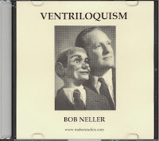

The Neller Course on Ventriloquism
7/6/2010
{kind=link}

I've always thought Bob Neller's instruction on Distant Ventriloquism (found on his CD) is one of the best instructional tools on this skill. Of his method, Bob had this to say:
"My approach to the difficult field of distant ventriloquism is going to be quite different. If you fully understand the qualities of sound necessary for certain situations and hear the quality demonstrated, I believe you will find a means of duplicating the sounds by trial and error much easier than trying to interpret the complex description necessary to fully explain them. You will know what I mean if you have ever tried to read a description of a complicated magician's sleight of hand trick and from this description do the trick as the writer does it."
In other words, it's much easier to learn the technique of distant ventriloquism by hearing it demonstrated rather than reading about it. And that's exactly what Bob so skillfully does on this instructional CD. Of course, he also teaches Close Ventriloquism with his own unique method. The price of both the one hour CD and the supplemental booklet is just $9.95 (free shipping)! You can purchase now using Paypal HERE!